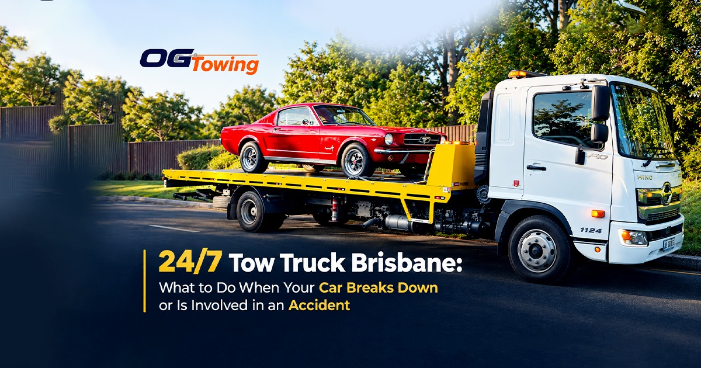

A car breakdown or accident can happen when you least expect it. Whether you are driving through Brisbane, Capalaba, Cleveland, Alexandra Hills, Redland Bay or travelling along the Pacific Motorway, getting professional towing assistance quickly can help you stay safe and get your vehicle to the right destination.
OG Towing provides 24/7 tow truck services across Brisbane, Capalaba, Redlands and surrounding South East Queensland suburbs. The company provides car towing, emergency towing, accident recovery, insurance towing and vehicle transport services.
What Should You Do When Your Car Breaks Down?
If your vehicle suddenly stops working, move to a safe location if possible and switch on your hazard lights. Avoid standing close to moving traffic and contact a professional tow truck Brisbane service for assistance.
A professional towing operator can help transport your vehicle to a mechanic, home, repairer or another suitable destination.
For motorists searching for 24/7 emergency towing Brisbane, OG Towing provides towing assistance throughout Brisbane and nearby areas.
Tow Truck Services Across Brisbane and Capalaba
Finding a local tow truck near Capalaba can be particularly useful when you need immediate assistance. OG Towing services Capalaba and surrounding areas including Cleveland, Victoria Point, Redland Bay, Alexandra Hills, Birkdale, Wellington Point and Thornlands.
The service area also includes Brisbane, Logan, Ipswich and surrounding suburbs.
Accident Towing Brisbane
After an accident, your vehicle may not be safe to drive. In this situation, professional accident towing capalaba can help transport the vehicle safely.
OG Towing provides accident towing and vehicle recovery services across Brisbane and Redlands and can transport vehicles to a repairer or other appropriate destination.
Breakdown Towing and Emergency Vehicle Recovery
Breakdowns can occur because of battery problems, engine failure, overheating, flat tyres or other mechanical issues. If your vehicle cannot safely continue driving, arranging a breakdown tow truck Brisbane service can help you get the vehicle to a mechanic.
OG Towing operates 24/7, including nights, weekends and public holidays.
Towing on Brisbane Motorways
Motorway breakdowns require extra care because of traffic speeds and limited stopping areas. OG Towing's service area includes major routes such as the Pacific Motorway (M1), Gateway Motorway, Bruce Highway and Ipswich Motorway.
Internal links to create:
- Pacific Motorway Tow Truck
- Gateway Motorway Tow Truck
- Bruce Highway Tow Truck
- Ipswich Motorway Tow Truck
These pages can target highly specific searches from motorists who need towing assistance along major Brisbane roads.
What Vehicles Can a Tow Truck Transport?
Professional towing services can assist with many types of vehicles. OG Towing states that it handles cars, SUVs, 4WDs, motorcycles, light commercial vans and accident-damaged vehicles. Heavy vehicles and machinery can require a specific assessment and quote.
Why Choose a 24/7 Towing Service?
A vehicle problem does not always happen during business hours. A 24/7 towing service gives motorists an option when they experience a breakdown, accident or vehicle emergency at night, on weekends or on public holidays.
When choosing a towing company, consider response time, vehicle handling, service coverage, availability and pricing transparency.
Need a Tow Truck in Brisbane?
If you need car towing Brisbane, emergency towing Brisbane, accident towing, or a tow truck near Capalaba, OG Towing provides 24/7 towing services throughout Brisbane, Redlands and surrounding areas. Call 0430 917 742 for assistance.
FAQs
Yes. OG Towing provides 24/7 towing assistance across Brisbane, Capalaba, Redlands and surrounding South East Queensland suburbs.
Response times can vary depending on your location, traffic and current demand. Contact OG Towing with your exact location so the operator can provide assistance and an estimated arrival time.
Yes. OG Towing provides emergency towing for vehicle breakdowns, accidents and other situations where a vehicle cannot safely continue driving.
Yes. OG Towing services Capalaba and nearby areas, including Cleveland, Alexandra Hills, Victoria Point, Redland Bay, Birkdale, Wellington Point and Thornlands.
Yes. Accident towing is available for vehicles that have been damaged and may no longer be safe to drive. Vehicles can be transported to a suitable repairer or destination.